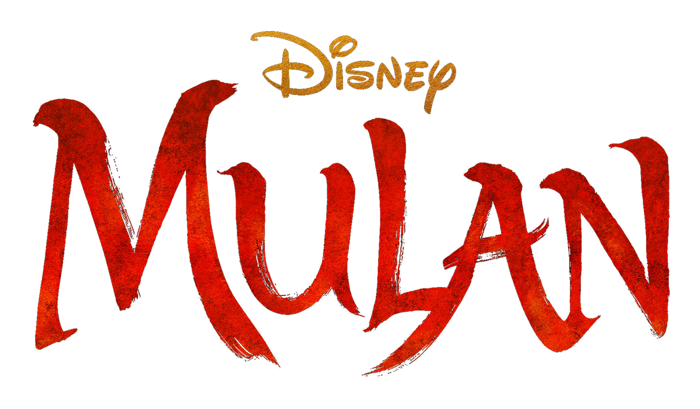
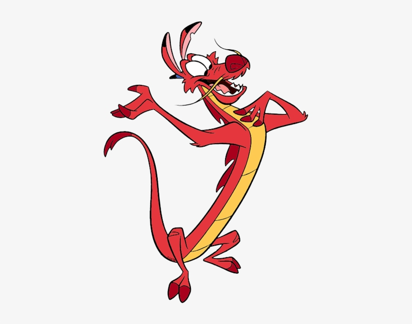
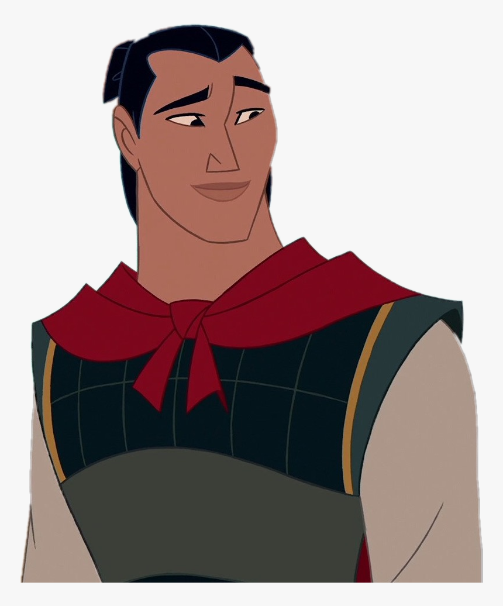
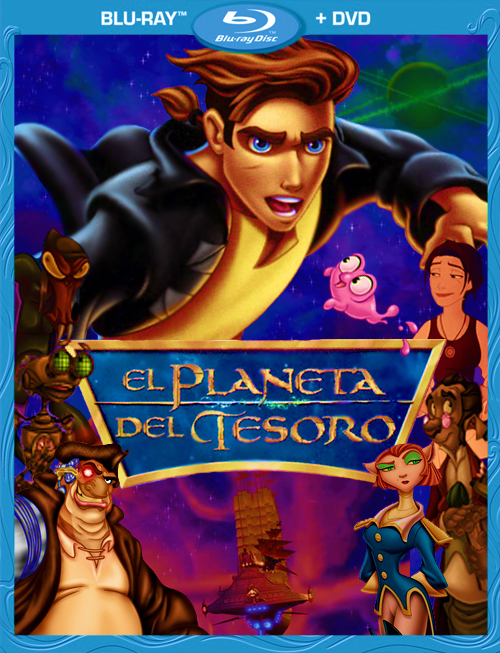
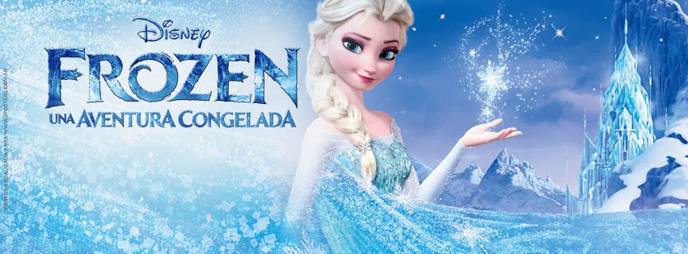
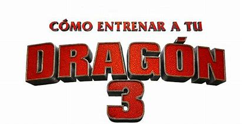
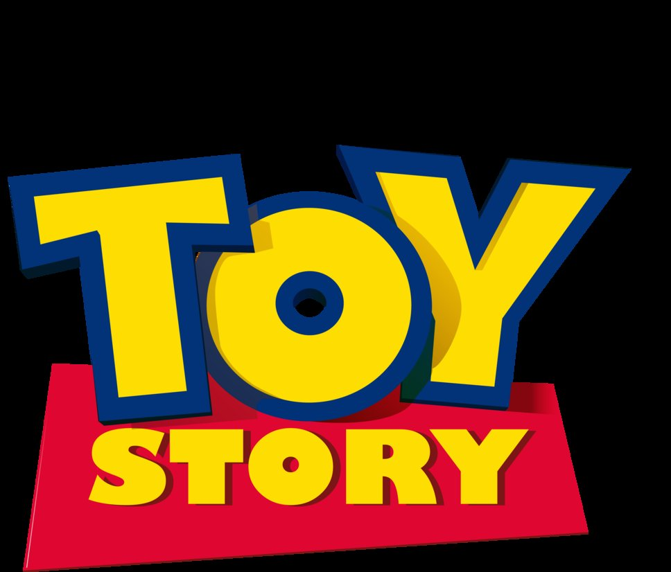
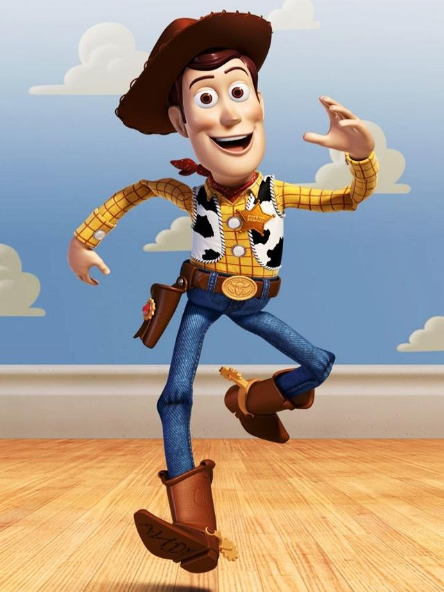
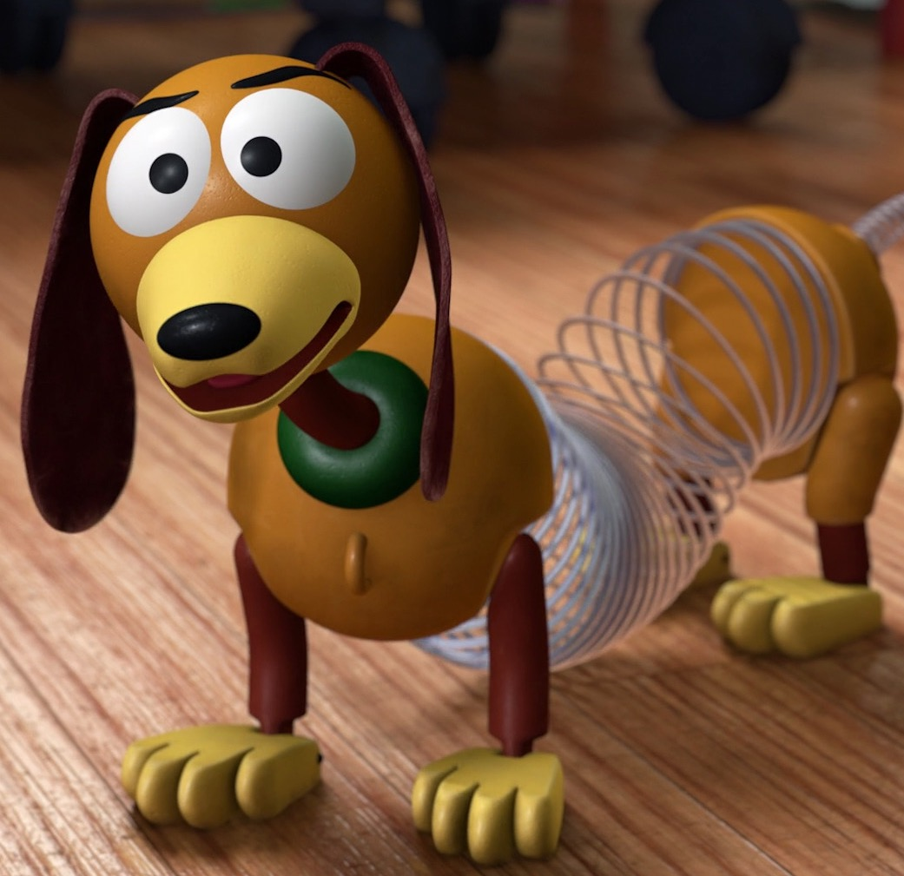
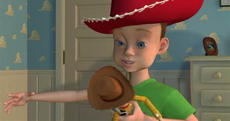

Peliculas recomendadas

Mulan es una película de animación y aventuras dirigida por los estadounidenses Tony Bancroft y
Barry Cook, producida por Walt Disney Feature Animation, y estrenada en 1998. El argumento está
inspirado en el poema chino Balada de Fa Mu Lan y gira en torno a las hazañas de la joven Mulan
que, para evitar el alistamiento de su anciano y enfermo padre, se viste como un hombre y decide
enrolarse en el ejército imperial para hacer frente a la invasión de los hunos, labor en la cual es
apoyada por Mushu, un dragón parlante escogido por sus ancestros familiares, y Cri-Kee, un grillo
que supuestamente da suerte.
PRINCIPALES PERSONAJES.
|
|

|

|

|

El planeta del tesoro (Treasure Planet) es una película de animación tradicional de ciencia ficción
del año 2002 de tipo steampunk producida por Walt Disney Animation Studios y lanzada por Walt Disney Pictures
el 27 de noviembre de 2002. Es la número 43 en el canon de Walt Disney Animation. La película es una adaptación
en clave de ciencia ficción de la novela de aventuras de Robert Louis Stevenson La isla del tesoro y fue la
primera película que se lanzó simultáneamente en salas tradicionales e IMAX.23 La película emplea una novedosa
técnica de animación tradicional 2D de dibujado a mano combinada con la animación por computadora en 3D.
PRINCIPALES PERSONAJES.

En el mundo de frozen hay una profecía condena a un reino a un invierno eterno.
Así que Anna se ve obligada a unirse a Kristoff, un audaz hombre de las montañas
y emprender un viaje épico en busca de la Reina de la Nieve (Su hermana) para poner fin al gélido hechizo.
Anna y Kristoff harán frente a temperaturas extremas propias del Everest,
a criaturas místicas y lucharán contra los elementos para salvar al reino de la destrucción más absoluta.
PRINCIPALES PERSONAJES.
Moana es una adolescente oriunda de Polinesia que se preocupa en rescatar
las tradiciones de su antiguo pueblo. Es considerada como la Princesa de Disney que ha roto los estereotipos de la clásica
doncella que es rescatada por un príncipe de gran estirpe. A esta tierna muchacha se le observa vestida de forma
sencilla, sin largos vestidos y cabellera como Disney tenía acostumbrados. La princesa es hija del gran Motonui, el jefe del pueblo
donde viven. Como parte de una ley familiar, Moana debe encargarse del pueblo en el momento en que su padre muera.La joven
estaba confusa respecto a la herencia familiar que han manejado a lo largo de generaciones. El padre siempre le recalca que nunca puede navegar sobre las aguas más allá de un límite establecido en las leyes.
PRINCIPALES PERSONAJES.

Hipo es un adolescente vikingo. Vive en la Isla Mema, una aldea asediada constantemente
por los ataques de dragones voraces y destructores. El padre de Hipo es el jefe de la tribu y se siente decepcionado porque
su hijo es un chico que, físicamente, no llena los “estándares” del vikingo típico: él es delgaducho y torpe en el
manejo de las armas. Posee otras virtudes valiosas, como el ingenio y la inteligencia, es además intuitivo y respetuoso,
pero éstas no son cualidades que se aprecien mucho en un vikingo; por el contrario, es la burla de los aldeanos. Hipo,
por su parte, quiere probar que es un guerrero digno de su padre y está ansioso por matar a un dragón. Ha inventado un arma
para hacerlo y una noche, durante uno de los ataques, logra maniatar a uno, pero cuando está a punto de matarlo,
se compadece de la bestia, la libera y…se convierte en su amigo. Esta amistad cambiará su vida y, con el tiempo, el destino de la aldea.
PRINCIPALES PERSONAJES.

Toy Story comienza con una misión de reconocimiento realizada por un grupo de juguetes,
encabezados por el vaquero Woody, para identificar los obsequios recibidos por su propietario, Andy, con motivo de su
séptimo cumpleaños. Entre los regalos se encuentra una figura de acción, el guerrero espacial Buzz Lightyear, que rápidamente
pasa a ser el predilecto del niño. Si bien la mayoría de los juguetes, entre ellos Bo Peep, Mr. Potato Head, Hamm,
Slinky y Rex, reciben con entusiasmo a Buzz, Woody busca deshacerse en secreto de él por haberlo sustituido como el muñeco
favorito de Andy. Buzz desconoce su identidad como un juguete y cree que su objetivo es regresar de vuelta a su planeta natal.
PRINCIPALES PERSONAJES.
|

|

|

|

|